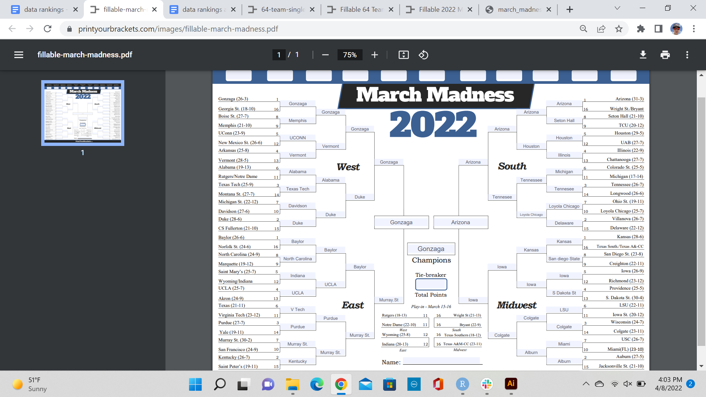

Solving the Unpredictability of March Madness Seeding (potentially)
College Basketball fans all around the country wait every year to take another swing at a perfect bracket. Despite many feeling confident they have the perfect one this year, after one day of games they wont be feeling that way anymore.
Most people use seeding as one of the main way to fill out their bracket. Teams are seeded 1-16 and are seeded based on season performance by the NCAA selection committee. This committee is far from perfect however as lower seeds pulling off upsets is inevitable in every tournament.
In a perfect world all of the 1 seeds would go to the final four every year, yet hardly anyone puts all four one seeds in the final four.
Which begs the question of: what is the best way to seed the NCCA tournament.
Many have come up with their own systems to seed the bracket. However, I think that the best way to seed the tournament is a way that is completely void of human Bias.
What if the seeding was entirely based on numbers?
Seeding the tournament strictly by numbers would keep the seeding consistent for all of the teams. Numbers are also the clearest indicator of team performance. Thus the seeding will be based on a single teams performance vs the other tournament teams during the regular season.
We will use every major statistical category for these new number based rankings. These statistics are as follows: points per game (PPG), rebounds per game (RPG), assists per game (AST), steals per game, (SPG), blocks per game (BPG), turnovers per game (TPG), field goal percentage (FG%), and three point percentage (3P%).
We will then take into account each teams place in the rankings. The average of each teams place in every category will then be calculated. The teams will then be reseeded based on the new average. The lower a teams average score, the higher that team will be seeded.
To keep things simple, we will be using the teams selected for the 2022 NCAA tournament. Although there is a way to determined the selected teams based on the same stats, it will not be included in these new seedings.
Also we will just be looking at the top 20 teams in each category to avoid overcrowding the charts. Got that? Now, lets start..
Now lets see how each team perfromed in each of the categories. First up, PPG.
 No surprise to see Gonzaga leading here. Gonzaga was the most picked team to win the tournament for a reason. Also a surprise to see no 13 seed South Dakota State at number two. Rounding out the top five is Arizona, Iowa, and UAB.
No surprise to see Gonzaga leading here. Gonzaga was the most picked team to win the tournament for a reason. Also a surprise to see no 13 seed South Dakota State at number two. Rounding out the top five is Arizona, Iowa, and UAB.
Next we will look at total rebound leaders. Here they are.
 Once again Gonzaga comes out on top. Again, no surprise here considering they had long arm Holmgren at the center. Another 1 seed takes second place as Arizona makes another top 3 Appearance. 3-5 place Auburn, UNC, and UCONN.
Once again Gonzaga comes out on top. Again, no surprise here considering they had long arm Holmgren at the center. Another 1 seed takes second place as Arizona makes another top 3 Appearance. 3-5 place Auburn, UNC, and UCONN.
Next lets look at the best teams at distributing the rock in the tournament with assists. Here they are.
 No surprise here with Arizona and Gonzaga again taking the one and two spots respectably. Right behind them is a 13 seed: Colgate who was one of the top shooting teams in the nation last year. The rest of the top 5 is Duke and Tennessee.
No surprise here with Arizona and Gonzaga again taking the one and two spots respectably. Right behind them is a 13 seed: Colgate who was one of the top shooting teams in the nation last year. The rest of the top 5 is Duke and Tennessee.
Next we will look at two major defensive stats. First up is steals.
 We finally have some new teams in the 1 and 2 spots with LUS and UAB ahead of everyone else. Tennessee makes a second top 5 appearance at 3 with Miami and Baylor making up the top 5. Next up, Blocks.
We finally have some new teams in the 1 and 2 spots with LUS and UAB ahead of everyone else. Tennessee makes a second top 5 appearance at 3 with Miami and Baylor making up the top 5. Next up, Blocks.
 Blocks is dominated by 1 and 2 seeds with Auburn at the top. The only non 1-2 seed is 5th seeded UCONN at 2. The rest of the top 5 is all big names Gonzaga, Arizona, and Duke.
Now lets take a look at a category one would want to be last in. Here are the turnover leaders.
Blocks is dominated by 1 and 2 seeds with Auburn at the top. The only non 1-2 seed is 5th seeded UCONN at 2. The rest of the top 5 is all big names Gonzaga, Arizona, and Duke.
Now lets take a look at a category one would want to be last in. Here are the turnover leaders.
 Turnovers has a interesting mix of teams. No 1-2 seed domination here with Wisconsin, Iowa, and UCLA in the top 3. Miami makes another top 5 appearance at 4 with Vermont in 5th.
Turnovers has a interesting mix of teams. No 1-2 seed domination here with Wisconsin, Iowa, and UCLA in the top 3. Miami makes another top 5 appearance at 4 with Vermont in 5th.
Now lets look at which teams were the best at shooting. In order to win a team has to put points on the board. The higher the efficiency the better. Lets look at the leaders.

Guess who’s number 1? Gonzaga, again. But look at 13 South Dakota State in number 2. What a way to represent! Also look at how much they are ahead of evreyone else. That is NUTS. Duke, Arizona, and Vermont round up the top 5.
The three pointer is becoming a bigger trend in college basketball with more and more threes being taken each year. Lets look at the purest shooting teams in the tournament.
 Our last category comes with a big shocker. Two 13 seeds lead with South Dakota State and Colgate at 1 and 2. I fact 3 point shooting has no team seeded below 10 with 11 seed Virginia Tech in 3rd, 10 seed Davidson in 4th and 15 seeded Jacksonville state in 5th.
Our last category comes with a big shocker. Two 13 seeds lead with South Dakota State and Colgate at 1 and 2. I fact 3 point shooting has no team seeded below 10 with 11 seed Virginia Tech in 3rd, 10 seed Davidson in 4th and 15 seeded Jacksonville state in 5th.
Now that we have all the categories named, lets take a look the new bracket. Remember, resseds are based on averages in the previous categories. The average is pasted next to each team. Lets take a look.
theteams<-read_csv("teamsdata.csv")## Rows: 64 Columns: 4
## -- Column specification --------------------------------------------------------
## Delimiter: ","
## chr (1): School
## dbl (3): Origninal Seed, Reseed, Diffrence
##
## i Use `spec()` to retrieve the full column specification for this data.
## i Specify the column types or set `show_col_types = FALSE` to quiet this message.Reseeded MM
 Now that we have viewed the brackets lets look at the teams that gained and lost the most seeding. The first table is gained and the second table is loss.
## # A tibble: 9 x 3
## School total total_Diffrence
## <chr> <int> <dbl>
## 1 Colgate 1 12
## 2 South Dakota State 1 10
## 3 Longwood 1 9
## 4 Vermont 1 9
## 5 Gerogia State 1 7
## 6 Jacksonville State 1 7
## 7 Memphis 1 6
## 8 Murray State 1 6
## 9 UAB 1 6## # A tibble: 11 x 3
## School total total_Diffrence
## <chr> <int> <dbl>
## 1 Creighton 1 -5
## 2 Texas Tech 1 -5
## 3 Illionis 1 -6
## 4 Kentucky 1 -6
## 5 St Marys 1 -6
## 6 Bosie State 1 -7
## 7 Providence 1 -7
## 8 TCU 1 -7
## 9 Texas 1 -8
## 10 Villanova 1 -13
## 11 Wisconson 1 -13Some of the biggest Underseededs were Colgate (originally a 14 seed) is now a 2 seed and South Dakota state (before a 13 seed) is now a 3 seed. This is due to the amount of points both teams put up and their shooting percentages.
On the other side of seedings, Villianova fell from a 2 seed all the way to a 15 seed. This is mainly due to Villanova being toward the back of every statistical category.
Also attached is a NCAA bracket if the picks were made based on the results of the data. You can find all of the averages at this link: https://docs.google.com/document/d/1JhJVlzXfDtfw8PA18nmKPHqFtx5_bmRKe0_4MAbIuMM/edit?usp=sharing
The Result: There is no correct way to predict an NCAA tournament game. Even when looking at the one aspect of sports that doesn’t lie, stats, these are far from perfect predictions.
Have fun with your brackets and maybe you will be the 1 in 9.2 quintillion that gets a perfect bracket.
The code for this blog post is here.